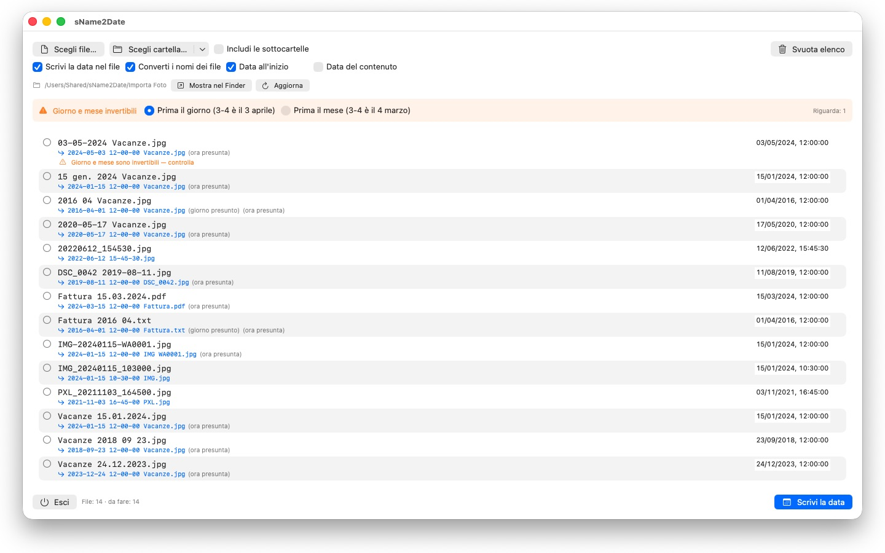
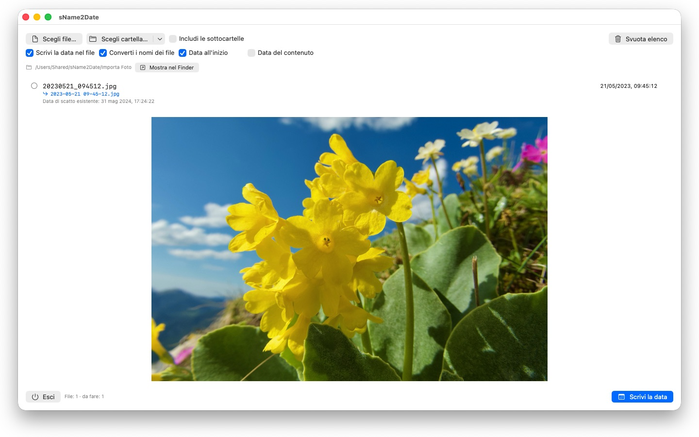

sName2Date
La data dal nome nella foto
Prossimamente · ottobre 2026Le foto senza data di scatto non si ordinano da nessuna parte. sName2Date prende la data dal nome del file e la scrive dove ogni gestore di foto la cerca.


Molte foto e molti filmati portano la loro data nel nome del file — ma non dove i programmi la cercano. Chi acquisisce immagini da una chat, da uno scanner o da un vecchio archivio si ritrova file come IMG_20240115_103000.jpg o Vacanze 15.01.2024.jpg, che in qualsiasi gestore di foto compaiono con la data di oggi.
sName2Date legge la data dal nome del file e la scrive nel file come data di scatto. Se non ce n'è ancora una, viene creata.
NOTAZIONI RICONOSCIUTE
Data e ora nelle forme più diffuse, tra le altre:
- 2024-01-15 10-30-00
- IMG_20240115_103000
- IMG-20240115-WA0001
- 2024-01-15 · 2024 01 15 · 2024_01_15
- 15.01.2024 · 15-01-2024 · 15.01.24
- 15 gen. 2024 · 15 marzo 2024 · January 15 2024
- 2016 04 · 04-2016 — solo anno e mese
I nomi dei mesi per esteso vengono letti nella lingua del tuo sistema e in inglese, sia nella forma lunga sia in quella abbreviata.
Se il nome contiene solo una data, viene assunta un'ora; quale, lo decidi tu. Se manca anche il giorno, vale il primo del mese — la riga lo indica. Se nel nome ci sono più date, vince la prima. E dove giorno e mese sarebbero intercambiabili decide la tua impostazione — i file interessati vengono contrassegnati, invece di essere indovinati in silenzio.
Se nel nome non c'è alcuna data, la inserisci tu stesso nella riga, a destra. Si può risalire fino al 1826, l'anno della più antica fotografia conservata — così le riprese ottocentesche digitalizzate si datano esattamente come quelle di ieri.
CHE COSA VIENE MODIFICATO
Vengono scritti EXIF DateTimeOriginal e DateTimeDigitized nonché TIFF DateTime, nei filmati e nelle registrazioni audio la data di creazione all'interno del contenitore. Su richiesta anche la data di creazione e di modifica del file stesso.
I dati dell'immagine restano intatti: un JPEG non viene ricompresso, un filmato non viene ricodificato. Nei filmati e nelle registrazioni audio l'app di norma modifica solo pochi byte nel contenitore, invece di riscriverlo — così anche un filmato di grandi dimensioni è pronto in un istante.
Una data di scatto la accolgono JPEG, PNG, TIFF, HEIC e GIF, oltre ai formati video MP4, MOV e M4V e ai formati audio M4A e M4B.
ANCHE I FILE CHE NON POSSONO CONTENERE UNA DATA DI SCATTO
Un PDF, un file di testo, una tabella non ha alcun campo per una data di scatto — eppure entra lo stesso nell'elenco. Lì sName2Date imposta la data di creazione e di modifica del file, l'unico posto in cui l'indicazione possa arrivare; la riga lo mostra con un segno di spunta arancione invece che verde. Qui non conta nessuna estensione — PDF, testi, tabelle, archivi, tutto.
Se il file non deve essere toccato affatto, disattivi in alto nella finestra la casella «Scrivi la data nel file». Allora sName2Date porta soltanto il nome nella notazione ISO: da Fattura 15.03.2024.pdf nasce 2024-03-15 12-00-00 Fattura.pdf, e nel Finder la cartella si ordina così per data. Su richiesta la data resta anche là dove si trovava nel nome, invece di spostarsi all'inizio.
TUTTO SI PUÒ ANNULLARE
Un'esecuzione si annulla completamente con Cmd+Z — data di scatto, date del file e il nome modificato. Cmd+Shift+Z la ripristina.
CARTELLE INTERE
sName2Date elabora interi alberi di cartelle in una volta sola e può saltare i file che hanno già una data di scatto. Le cartelle autorizzate una volta se le ricorda e non le chiede mai più.
sName2Date Lite · Gratis — L'edizione per un file alla volta: scrivi la data del nome del file come data di scatto in una foto, un filmato o una registrazione audio, impostala manualmente, porta il nome nella notazione ISO e annulla tutto con ⌘Z, con le stesse capacità di sName2Date, solo senza cartelle intere.
- Richiede macOS 12 o versioni successive
- 25 lingue
- Assistenza: SwiftAppsBavaria@gmx.net
Altre app
SwiftRename
Rinomina file in blocco: in base alla data di scatto, con numerazione progressiva o direttamente ordinati in cartelle per anno e mese.
sVectorLift
Apri, visualizza e salva come SVG le vecchie clipart vettoriali: CorelDRAW, Windows Metafile e CGM.
sCollect
Organizza musica, film, audiolibri, e-book e altre raccolte in una libreria multimediale. Con i formati più diffusi ogni informazione finisce nel tag del file stesso, non solo nel database, con supporto completo a ID3v2.4. Gli MP3 si possono esportare come copia per iTunes e l'app Musica senza che gli artisti multipli vengano troncati; l'intera libreria viene esportata come file XML di iTunes. Riproduce quasi ogni formato, direttamente o tramite un lettore esterno.
sCollectPlay
Il lettore per la libreria: riproduci musica, film, audiolibri e podcast semplicemente da una cartella, da un file XML di iTunes o da una libreria sCollect, senza modificare i tag dei file. Con playlist, tracce audio e sottotitoli e, per i film, rallentatore e avanzamento fotogramma per fotogramma. Ciò che macOS non riproduce da sé, come MKV, AVI o DSD, viene passato a un lettore esterno.
sCollectPlay Lite
L'edizione essenziale di sCollectPlay: apri semplicemente una cartella, un file XML di iTunes o una libreria sCollect e riproduci musica, film, audiolibri e podcast, con playlist, tracce audio e sottotitoli, rallentatore e avanzamento fotogramma per fotogramma. Una sola fonte per sessione; browser a colonne, playlist personali e fonti usate di recente restano riservati alla versione completa.
sBikeBridge
Analizza le uscite in bici senza caricarle su un portale: importa i file FIT di qualsiasi ciclocomputer che registri in questo formato, oltre a GPX e TCX. Le uscite restano in una libreria propria sul Mac, con mappa, potenza e frequenza cardiaca, foto e note; l'importazione riconosce i duplicati. Indicatori per anno o per mese e filtri per distanza, dislivello e durata rendono le uscite confrontabili. Su richiesta, la mappa è disponibile anche offline.